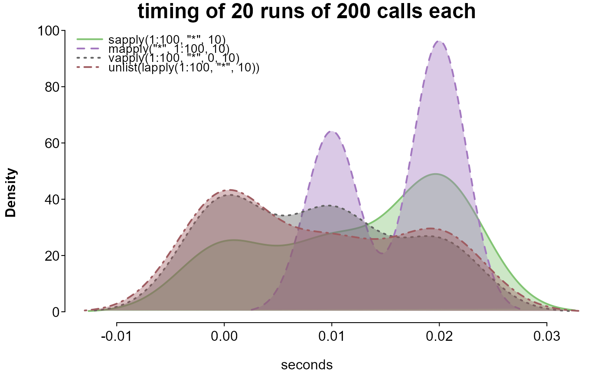

Time one or more expressions over several iteration, then plot the distributions of their times.
Arguments
- ...
accepts any number of expressions to be timed. See examples.
- runs
the number of overall iterations. Increase to stabilize estimates.
- runsize
the number of times each expression is evaluated within each run. Increase to differentiate estimates (particularly for very fast operations).
- cleanup
logical; if
TRUE, garbage collection will be performed before each run. Garbage collection greatly increases run time, but may result in more stable timings.- print.names
logical; if
FALSE, the entered expressions will be included in the plot as legend names. Otherwise, (and if the number of expressions is over 5 or the length of any expression is over 50 characters) expressions are replaced with numbers corresponding to their entered position.- limit.outliers
logical; if
TRUE(default), times over an upper bound for the given expression will be set to that upper bound, removing aberrant extremes.- check_output
logical; if
TRUE, the output of each expression is checked withall.equalagainst that of the first. A warning indicates if any are not equal, and results are invisibly returned.- check_args
a list of arguments to be passed to
all.equal, ifcheck_outputisTRUE.- options
a list of options to pass on to splot.
Value
A list:
| plot | splot output |
| checks | a list of result from all.equal, if check_output was TRUE |
| expressions | a list of the entered expressions |
| summary | a matrix of the printed results |
Examples
# increase the number of runs for more stable estimates
# compare ways of looping through a vector
splot.bench(
sapply(1:100, "*", 10),
mapply("*", 1:100, 10),
vapply(1:100, "*", 0, 10),
unlist(lapply(1:100, "*", 10)),
runs = 20, runsize = 200, check_output = TRUE
)
#> benchmarking 4 expression(s) in chunks of 200 per run...
#> run 0 of 20
run 1 of 20
run 2 of 20
run 3 of 20
run 4 of 20
run 5 of 20
run 6 of 20
run 7 of 20
run 8 of 20
run 9 of 20
run 10 of 20
run 11 of 20
run 12 of 20
run 13 of 20
run 14 of 20
run 15 of 20
run 16 of 20
run 17 of 20
run 18 of 20
run 19 of 20
run 20 of 20
finished 20 runs in 0.96 seconds
#>
#> expressions:
#>
#> 1. sapply(1:100, "*", 10)
#> 2. mapply("*", 1:100, 10)
#> 3. vapply(1:100, "*", 0, 10)
#> 4. unlist(lapply(1:100, "*", 10))
#>
#> 1 2 3 4
#> total time (seconds) 0.2300 0.3800 0.1700 0.1800
#> mean time per run 0.0115 0.0190 0.0085 0.0090
#> times the minimum 1.3529 2.2353 1.0000 1.0588

# compare ways of setting all but the maximum value of each row in a matrix to 0
if (FALSE) {
mat <- matrix(c(rep(1, 4), rep(0, 8)), 4, 3)
splot.bench(
t(vapply(seq_len(4), function(r) {
mat[r, mat[r, ] < max(mat[r, ])] <- 0
mat[r, ]
}, numeric(ncol(mat)))),
do.call(rbind, lapply(seq_len(4), function(r) {
mat[r, mat[r, ] < max(mat[r, ])] <- 0
mat[r, ]
})),
do.call(rbind, lapply(seq_len(4), function(r) {
nr <- mat[r, ]
nr[nr < max(nr)] <- 0
nr
})),
{
nm <- mat
for (r in seq_len(4)) {
nr <- nm[r, ]
nm[r, nr < max(nr)] <- 0
}
nm
},
{
nm <- mat
for (r in seq_len(4)) nm[r, nm[r, ] < max(nm[r, ])] <- 0
nm
},
{
nm <- matrix(0, dim(mat)[1], dim(mat)[2])
for (r in seq_len(4)) {
m <- which.max(mat[r, ])
nm[r, m] <- mat[r, m]
}
nm
},
{
ck <- do.call(rbind, lapply(seq_len(4), function(r) {
nr <- mat[r, ]
nr < max(nr)
}))
nm <- mat
nm[ck] <- 0
nm
},
t(apply(mat, 1, function(r) {
r[r < max(r)] <- 0
r
})),
runs = 50,
runsize = 200,
check_output = TRUE
)
}